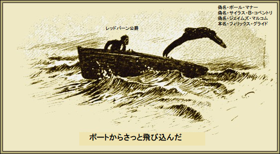

第一章
ちょっと生々しい騒動が昨年早々起り、当時アンジェラ・ラブ事件と呼ばれた。
ラブ令嬢は、舞台で急速に頭角を現し、
むかしラブ船長という
本当の女優じゃないことなど、最終的に成功したからどうでもいい。あとは、おつむが軽く、わがままな小娘で、恋愛の
アンジェラ・ラブ令嬢の恋人の中で際立った人物が、若いレッドバーン公爵。二十歳までこの若い貴族は清教徒の祖母の
古代騎士の華麗な血統がレッドバーン公爵だ。純朴な情熱家だったので、ラブ嬢と知り合うや、たちまち
うわさ好きによれば、同嬢はたった一つの理由でレッドバーン公爵夫人になることをためらった。公爵にしては貧しかったからだ。かわいい令嬢は超現実家だった。
それにもう一人、熱を入れ上げたウェリントン・ミルズという恋人もおり、この若い億万長者の財力はノース炭田に由来する。
その間アンジェラ・ラブ令嬢はちょっと決めかねていた。保険をかけて、二人同時に婚約するという誠に都合のよい方策に打って出た。もちろん内緒だ。
これまた当然、避けられない事態が起こる。婚約者同士が「のらくらクラブ」で激しく口論し、同嬢には乱暴しなかったが、数日後に決着をつけようとなり、トルーヴィールの砂浜で撃ち合いをした結果、レッドバーン公爵は左腕を失ってしまった。
このホメロス風の試合が終わった後、決闘者それぞれにアンジェラ・ラブ令嬢から手紙が届いた。
「わたくし事態にとても悩み、激しい気性の騎士は選びかね、難題を解決するために、ドードルキン大公と結婚いたします。ちなみに同大公は欧州の大富豪ですの」
こんにちドードルキン大公妃は社交界の有名人になっており、タタール人の夫を
決闘相手のウェリントン・ミルズ大富豪は、今後女性を
一方、レッドバーン公爵は心に深手を負い、直ちにアメリカ西部へ狩猟旅行に出かけ、今後一年間いかなる手紙も新聞も送るなと厳命した。
順次これらはすべて、ライア新聞とユニバース新聞に詳しく載り、七回にわたり二紙は内容を競ったが、一致した事実はただ一点、レッドバーン公爵が本当に出国したということだけだった。
＊
こんな色ごと記事にフィリックス・グライドほど興味を持った者はいない。ニューヨーク新聞であれこれ読み、西部特急列車でレッドバーン閣下にお目見えし、安いお土産で攻略することにした。
その時グライドは重い病気にかかっており、療養のため英国へ帰るところだった。直ちに計画を変更して、同じ列車でレッドバーン公爵一行と数日を過ごした。この行動はやがて日の目を見ることになる。
最終的にニューヨークを去るにあたり、グライドは英国に手紙を二通送った。手元の筆跡をまねたものだが、やがて自分が苦しむことになろうとは……。
＊
九日後帰英して、驚くと共に嬉しかったのは、コーラ・コベントリが訪ねてきた。この時期、皆が街を出る。コーラは
「何だか具合が悪そうね」
とコーラ。
「病気なんだ。環境をすっかり変えたい。つまり快適な田舎の大邸宅で、ちょっと狩りもできて、さわやかな海風が吹くところだ。だが今は、まき
「あなたならできるわよ」
とコーラがおだててささやいた。
「古城に数カ月滞在する方法だが、うまくやれば費用はゼロだ。コーラ、きみは素晴らしい女優だし、アメリカにも二、三年いたことだし、どう？」
「いいわよ。退屈を
ご記憶の方もあろうが、コーラ・コベントリにとって、グライドはポール・マナーだ。
グライドが説明を始めた。
「とても簡単だよ。さしずめ俺は金持ちのサイラス・Ｂ・コベントリというアメリカ人になる。最近米国で一財産築いたことにする。はるばる妹に会いに来た。きみには米国に無名の金持ち兄さんがいるのさ。きみは、まあそのままでいい。もし危なくなったら、簡単な解決方法を後で教える。あした兄のサイラス・コベントリが訪ねてくる。役目上正装しているから、歓待してくれ」
「すてき。なんて面白い。で、どこへ行くの」
「
コーラが十一時なら
翌朝、出向くと、コーラが目を疑った。アメリカの上流階級にそっくりだ。顔色すら変わっている。
グライドがおもむろに言った。
「用意できたと思うが、同行してくれ。公爵代理人との契約だ。外に車を待たせている」
コーラは成り行きに任せた。しばらくして、二人はチープサイドに来た。アイアンモンガー通りにメッサー・サットン社があり、英国内のほとんどの不動産を一手に扱っている。
グライドがさりげなく無造作に差し出したこぎれいな名刺には「サイラス・Ｂ・コベントリ、ランハムホテル」という文字があった。
ややあって、二人は二階に案内され、事務所に通された。
「用件は分かると思うが」
とグライド。
マーチン・サットン氏がテーブルから手紙を取り上げて、
「あ、はい、お待ちしておりましたコベントリさん。お察しの通り、公爵から
「その手紙は見た事がある」
とグライドが
「そうでございますか。ではお読み聞かせは致しません。公爵がおっしゃるに、ニューヨークでお知り合いになられ、英国に数カ月滞在なされたい由。条件は大きい家だそうで。どうでございましょう、
「そうだな。私はビジネスマンだから、
「かしこまりました。お客さま、すぐ入居なさいますか」
「そうだ。金を払ったからには、私がすべて仕切る。地下のワインやら
「よろしゅうございます、お客様。まったく問題はございません。それで、いつ入居なさいますか」
「次の月曜日だ。よければ」
「承知しました。私共のスタッフを一人
「ない。手間を取らせたな。では」
コーラが興奮してぞくぞくっ。スウィフト曰く、『女はすべからく本心は遊び人』であり、コーラも生まれながらの冒険好きだ。
これからとても面白いことが起こり、様々な機会が訪れ、自分には危険が及ばないということをよく知っている。もちろんグライドは全面的に信用できる。どんな場合も助けてくれるだろう。
両眼を踊らせながら、グライドを見つめて言った。
「すごいわね、ポール。次は何をするの」
グライドがぶっきらぼうに言った。
「昼飯だ。運転手にベリーズ・レストランまで直行させる。これから二、三日は
おいしい昼食を注文して、かき込んだ。シャンパンを飲みながらコーラはこれからの楽しみにわくわくした。
間違いなく公爵邸が招いており、人生の中で今回だけは
「ポール、あんたの計画にぞっこんよ。あんたって、なんて素敵な人なの」
「もっとすごいぜ」
とグライドが真顔で言った。
「あらそう。一つ不思議だけど。お金を払わずに公爵にどうやって手紙を書かせたの」
「公爵には書かせてないよ、ハハハ」
「なら、手紙がここにあるって、どうして分かったの」
グライドがまた笑ってグラスを満たした。ちょっと間を置いて、やおらコーラの好奇心を満たし始めた。
「やり口が分かれば簡単さ。あの手紙を知っていたのは、とても単純かつ当然の理由、つまり俺が書いたからだ。人は偽造というかもしれないが、我々は工作という」
第二章
コーラ・コベントリの楽天的な期待が裏切られることはなかった。
ライア新聞とユニバース新聞の記事によれば、裕福な米国人サイラス・Ｂ・コベントリが
両紙の論調が一致したのは同氏が大金持ちの太っ腹ということ。この報道が広まったので、ノース・ライディング・ヨークシャー地方の人々がこぞってコベントリ
当然コーラは目いっぱい楽しむ。頭は切れるし、演技力はあるし、純金指輪をつけて堂々と出迎えた。いまだかつて
むかし
言うまでもないことだが、
いまヨークシャー全体が興奮している。広大な屋敷を借りたことに
グライドはさすがに給食列車までは嫌がった。なにしろ高額だ。
コーラが笑って言った。
「ふふふ、どうってことないでしょう。滞在中、現金で二百ポンド払うことも、ないわよ。おやまあ、周りの豪華な品々を見れば、食器や絵画もあなたの見立てじゃない」
今度はグライドが苦笑いして、
「そうだ。とにかく、まだたっぷり時間がある。もし今晩、公爵が帰ってきたらえらいことになるけど」
コーラが、そんな縁起でもないと抗議した。
グライドが言った。
「逃げ道は作ってある。実際どんな事態にも対応できる。何週間も前に想定済みだ」
ずっと後年になるまで、ヨークシャーの人々は、
コーラは黒レースにダイヤモンドをつけた堂々たる姿で、招待客を回った。もめ事や危険など、心の片隅にもなかった。
大ホールでざわめく一団の脇を通った時、ある言葉が聞こえ、その場に釘づけになった。一瞬ふらっと倒れそうになり、両手を握り、気を張った。危険が明らかに迫っている。
眼前の小集団の真ん中に、日焼けした
「コーラ・コベントリさん、こちらへいらっしゃいませんか。驚かせることがありますよ」
と陽気な声がした。
「あら、ご親切に。すぐ行きますわ」
とコーラが
言うが早いかコーラは廊下を喫煙室へ飛んで行った。文字通り、探していた男の両腕に倒れ込んだ。
「コーラ、いったいどうしたんだ」
とグライドが叫んだ。
「公爵よ、いま舞踏会場にいるのよ」
とひそひそ。
グライドがニヤリ。筋肉はピクリともしない。何の感情も出さない。
「本当か。思いどおりにならないなあ。あすまで待ってもよさそうなものを。コーラ、本当かい」
「グライド、危ないわよ」
「コーラ、それほど危なくないよ。こんなこともあろうかと準備したと言わなかったかな。どんな場合にも想定してあるから、きみは無実の被害者でいられる。公爵の所へ戻って、愛嬌を振りまきなさい。公爵は友人が大勢いるから騒ぎ立てることはしない。実際、公爵は紳士そのものだよ。
コーラがうなずいた。グライドに対する信頼は絶対だ。
「わかったわ。暴力沙汰はないんでしょうね」
「まさか。いつも、とにかく、そんなことはしないよ。コーラ、行きなさい。時間が惜しい」
コーラが廊下を行くや、グライドは自室に駆け込んだ。
レッドバーン公爵が友人と立ち話の最中にコーラは戻った。ほほに赤みが差し、両眼がキラキラ輝いている。つまり、なんら恐れていない。
「この
と一人の招待客がコーラに尋ねた。
コーラは
「あら、公爵閣下、たいへん驚きました。こんな時間にご
レッドバーン公爵は驚きのあまり返事できなかった。随分ずうずうしい振る舞いじゃないか。でなきゃ、演技が超一流だ。
「失礼しました。いなかったものですから」
とレッドバーン公爵が木で鼻をくくったように言った。
「そうでございますの。わたくしも、そうでございます。兄が会いたがっております」
「えーと、たしかコベントリさんでしたね、お互い様ですよ。お兄さんには以前あったことがあるからすぐわかります。どこへ行けば会えるかな」
「はい、ちょっとした用事がございまして、いま書斎で手紙を書いております。別に改まらなくても」
とコーラはあくまで無邪気だ。
レッドバーン公爵は、そういうことじゃないと答えた。コーラの屈託のない愛想のいい振る舞いに戸惑った。
ぶつぶつ言いながら書斎に向かった。
「あの女は無関係だな。あの顔を見れば皆そう思う。たぶん悪党に騙されているんだろう。奴のいつもの手口だ。たまたまライア新聞を読んでいたからよかった」
レッドバーン公爵が書斎扉を開けて、後ろ手で閉めた。テーブルに男が一人座って夢中で手紙を書いている。宛名書きされた封筒が脇にある。見れば、警視庁宛てだ。
レッドバーン公爵が叫んだ。
「悪党め、遂に見つけたぞ」
「何でしょうか、何かおっしゃいましたか」
またしてもレッドバーン公爵は言葉が出なかった。この男はコベントリじゃない、いやさ、何者だ。
レッドバーン公爵が口ごもった。
「も、申し訳ない。コベントリと間違えました。私は公爵……」
青年が立ち上がり声を上げた。
「閣下、お戻りになられたのですか。だからコベントリが城からあわてて逃げたんだな。閣下を見たのでしょう」
「いったい君は何者だ」
とレッドバーン公爵が
「閣下、私はここではジェイムズ・マルコムと申しまして、コベントリの新しい秘書をやっとりますが、実は警視庁の刑事でして、同庁の指示で潜りこんでおります。ニューヨーク市警から持ちこまれた案件で、コベントリを逮捕したいからでございます。これに関しては口外できないのです。でも大悪党なことは確かです。水面下で進めなければなりません。お分かりでしょう。閣下の口は堅いと信じております」
「私は今まで何も漏らしたことはない。全く偶然知って、大急ぎで戻ってきた。悪党を現行犯で捕まえて、警察が来る前に鞭打ちするつもりだった。ところでコベントリ嬢は兄同様に冷血、
マルコム刑事が真面目顔で答えた。
「閣下、気づかれたかもしれませんが、このペテンに関してコベントリ嬢は何も知りません。兄を億万長者と信じ切っています。兄が英国を十四年前に出てから、最近まで会っていません。とてもかわいそうな子なんです」
「それを聞いて安心した。ところで、時間を無駄にしてないか。犯人が私を見たのなら、議論している場合じゃないだろう。問題は、奴がどこにいるかだ」
「偶然分かりました。昔の密輸洞窟に隠れています。今は満潮ですから、奴は当分逃げられませんが、我々は朝まで手が出せません」
「マルコム刑事、それは我慢できん。
「閣下のおっしゃるように一
「じゃあ、行こう。あの野郎を捕まえるまでのんびりできん。野郎は間違いなく、ずる賢いことをたくらんでいる。マルコム刑事、私と一緒に来れば、無駄な骨折りはさせない」
マルコム刑事がきびきびと立ち上がり言った。
「閣下のおおせの通り致します。この道を通って、招待客の噂にならないようにしましょう。さいわい今夜は暖かい。洞窟まで私が漕ぎます。コベントリは丸腰です」
両人は庭に出て、
ボートが水際にあった。潮が急激に引いている。
「コベントリは泳いで行ったに違いありません。閣下お乗りください。ボートを出しますから」
マルコム刑事が押し出して、
やがてレッドバーン公爵が言った。
「まったくいろんな冒険をしたが、こんな妙な事件はない。なんでコベントリは密輸洞窟に隠れたんだ」
「簡単ですよ。コベントリには底知れない財力があります。きっとこんな非常事態にも備えています。やつは向う岸に蒸気船を用意しており、夜明けと同時に出港するはずです。閣下は泳げますか」
レッドバーン公爵が空っぽの左
「腕を失ってから試したことがあるが、我ながら過信を思い知ったよ。なぜ
「
公爵が驚くまいか、マルコム刑事がボートからさっと飛び込んだ。

しばらくするとマルコム刑事が岩に取りついた。
「どうするつもりだ」
と公爵が叫んだ。
次の返事を聞いて、公爵は仰天した。
「城へ戻るさ。お休み公爵。さいわい今夜は暖かいし、海はなぎだ。きっと数時間で救助される。好きなだけ叫べ。誰も聞いちゃいないから」
レッドバーン公爵が吠えた。
「悪党のコベントリめ。泳げさえすれば」
グライド、別名マルコムがぶっきらぼうに返した。
「泳げなくてよかったな。もし泳げると言ったら、やむを得ず頭をぶち抜いていたぜ。あばよ」
むなしい怒りに泡を吹く公爵を残し、グライドは悠々と城の崖に近づいた。大きな窓の下で止まった。
頭上の一室、自分の化粧室に明かりがついていた。その窓枠から一本のロープが垂れている。それを猫のようによじ登った。
濡れた衣服を脱いで隠すのは一瞬の技だ。信じられない程の短時間で、グライドは再び舞踏会場へ平然と戻った。
コーラが作り笑いをして、両眼に不安を浮かべ、つかつかと来て、大声で尋ねた。
「公爵はどこなの」
「残念ですが退城されました。もういらっしゃいません。お仕事の都合で来られないでしょう。お友達によろしくと
コーラがグライドを隅に引っ張った。唇が真っ青だ。
「ポール、あなた、まさか……」
とひそひそ。
「公爵は無事だよ。髪の毛一本も傷つけてない。正真正銘、安全だ。だから、この場に必要な愛想をまた振りまいてくれ」
夜明けの一条が空に差した時、最後の招待客が退城した。その時まで、コーラとグライドは自由に話せなかった。
やっとグライドが言った。
「よく聞いて。私は半時間以内に城を出なければならない。方法と変装は言うなよ。秘密だから。きみはここに置いておく。たぶん追求の試練に耐えるだろうからだが、本当はきみを疑惑から守るためだ。いいか、きみは悪党の兄の単なる手先だ。ころりとだまされただけだ。私の化粧台に手紙があり、私の悪事を白状し、きみの許しを請うている。きみのような素晴らしい女優なら完璧にやれる。その上、充分な練習時間もある。さあ、けりをつける時だ。レッドバーン公爵が戻って来た時、私が姿を消したことなど知らないと、とぼけることだ。さよなら」
片手を無造作に振って、グライドは背を向けて出て行った。直後、夜明けの薄明かりにこっそり忍び出て、崖に消えた。たぶん今更言う必要もないが、サイラス・Ｂ・コベントリはいまも
＊
これもまた言う必要はないが、レッドバーン公爵は、やがて戻ってきた。コーラはにこやかに迎えた。兄はどこ？ まだ寝ているの？ 質問攻めにする驚き具合といい、証拠手紙を読んだ時の嘆き悲しみといい、芸術的ですらだった。
レッドバーン公爵はもともと情に厚いたちなので、深く心を痛められた。そして
その日の遅くロンドンへ向かう際、自家用馬車で駅まで送ってくれた。
「何か私にできることはありませんか」
「ございません。一人になりたいだけでございます」
とコーラは弱々しく言った。
一度だけ、さっと涙をぬぐった。
「もう少しポールが嫌いで、どうでもよかったら、上品な公爵夫人として平凡な一生を送ったかもしれないなあ」
了